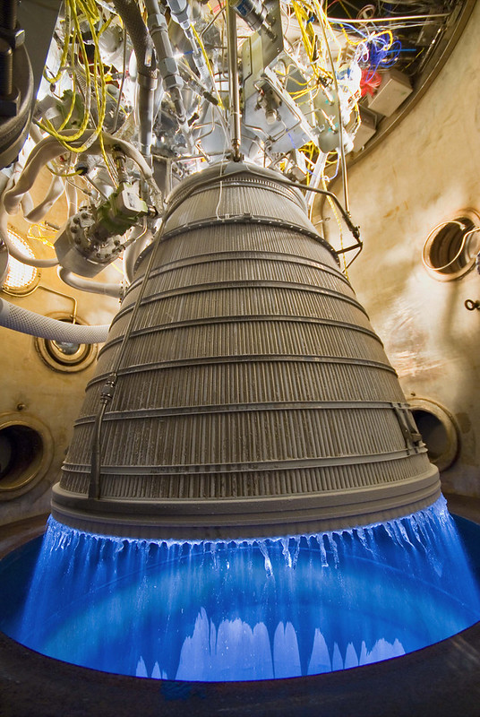
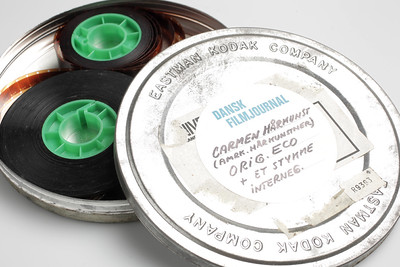

HyperCSS
HyperCSS
Le Projet
Repousser les limites du CSS
HyperCSS est un projet de démonstration de la puissance de CSS, qui permet de repousser les limites du CSS et de créer des effets visuels exceptionnels.
Le projet HyperCSS met en œuvre des techniques avancées de CSS, comme l'utilisation de variables, ou encore des sélecteurs avancés pour manipuler précisément certains élements.
La question est maintenant de savoir si nous pouvons vraiment repousser les limites du CSS.
Tout est-il possible? Que pouvons-nous vraiment simuler? Qe ne pouvons-nous pas simuler?
Mais aussi, est-ce vraiment utile?
D'après vous, devrait-on mettre des animations dans nos site?
Si oui, comment? Devons-nous nous limiter dans l'utilisation?

Les animations
Les animations en CSS peuvent permettre des choses assez poussée.
Que ce soit un loader pour faire une animation de chargement, un logo ou titre qui sursaute quand on passe dessus,
une image tourbillonnant quand on défile, ...
Ici, les animations sont utilisées pour simuler une impression de vitesse.
Tandis que notre vaisseau reste fixe, des météorites viennent du dessus de la zone de jeu.
Pendant ce temps, le background se déplace lui aussi, rendant donc l'illusion du mouvement;

La Mecanique du jeu
Il s'agit d'un jeu où l'on prend le contrôle d'un vaisseau.
Des checkbox cachées permettent de choisir la piste utilisée par le vaisseau.
Une météorite vient devant vous et vous êtes au centre de la zone de jeu?
Partez à gauche. Ou à droite.
Et si des météorites viennent de partout?
Attendez le passage de celle de la piste voisine et espérez avoir le temps de changer de piste avant le passage de celle qui déboule sur vous.
Bonne chance à vous!